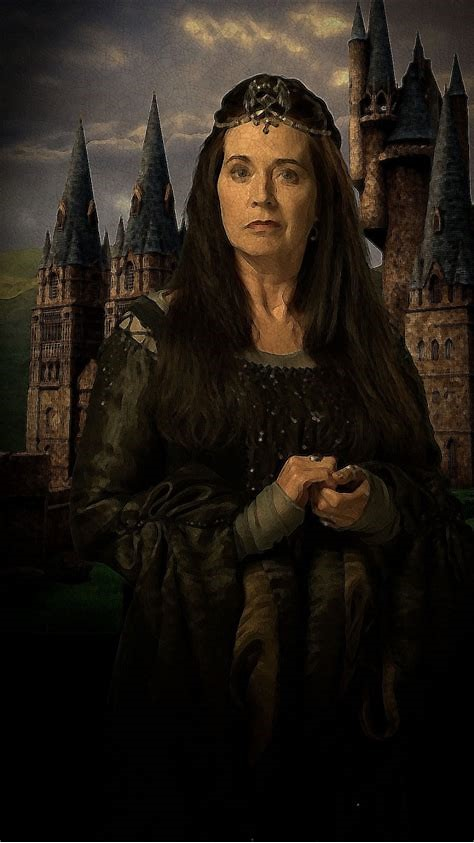
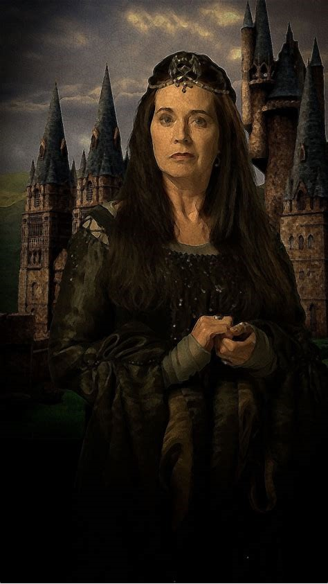

História
Há mais de 1000 anos Godric Griffyndor,Rowena Ravenclaw, Helga Hufflepuff e Salazar Slytherin, os maiores e melhores bruxos da época, juntaram-se para formar uma escola de magia e feitiçaria. Juntos, eles construíram o castelo de Hogwarts, com o objetivo de educar os jovens que apresentassem algum talento mágico.
Todos tinham qualidades singulares e distintas, e justamente por isso les criaram casas para dividir os alunos de acordo com os próprios interesses. A história de Hogwarts está preservada de diversas formas no grande castelo, seja nos quadros, nos livros, nos fantasmas ou no próprio dispositivo mágico sado para a divisão dos alunos em casas, o Chapéu Seletor, que era o antigo chapéu de Godric Gryffindor(fundador da Grifinória).
Porém um deles, Salazar Slytherin (fundador da Sonserina), discordava dos outros três fundadores, quanto a admissão dos alunos, pois queria que só fossem aceitos bruxos puro-sangue (de família inteiramente bruxa) e brigou com os outros.
Construiu então a câmara secreta que só seria aberta por seu descendente para que o monstro que ela guardava eliminasse todos os nascidos Trouxas (aqueles que não tinham sangue mágico) que estivessem na escola.
 
